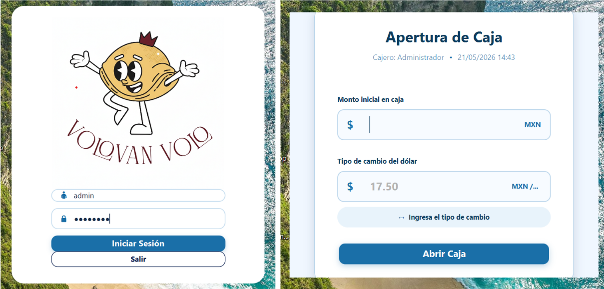

Introducción
Volovan Volo POS es un sistema de punto de venta de escritorio para la operación diaria de una panadería. Está construido en JavaFX y utiliza MySQL como base de datos central. El objetivo del sistema es controlar ventas, cobros, inventario, clientes, caja, reportes, usuarios, permisos, tickets y auditoría desde una interfaz única.
Función principal del POS
- Control de ventas.
- Administración de inventario.
- Gestión de clientes.
- Control de caja.
- Generación de reportes.
Requisitos mínimos
- JJava 21 o compatible con JavaFX 21.
- Base de datos: MySQL con base pospanaderia. La conexión predeterminada apunta a localhost:3306.
- Impresora: Impresora compatible con tickets de 58 mm u 80 mm. La apertura de cajón usa impresora térmica/ESC/POS.
- Resolución mínima 1366x768 o superior.
- Equipo de escritorio con acceso a red local.
Configuración de base de datos
- La conexión puede ajustarse con propiedades del sistema, variables POS_DB_URL, POS_DB_USER, POS_DB_PASSWORD o el archivo local db.local.properties.
Inicio de sesión
El usuario debe ingresar sus credenciales para acceder al sistema.
- 1. Abra la aplicación Volovan Volo POS.
- 2. Ingrese usuario y contraseña.
- 3. Presionar iniciar sesión.
- 4. Si no existe caja abierta, el sistema envía a Apertura de Caja.
- 5. Si ya existe caja abierta, el sistema abre el Menú Principal.

Ventas/Caja
Buscar productos
- • Use el campo Buscar producto para filtrar por nombre o código de barras.
- • Seleccione una categoría para limitar los productos visibles.
Historial, Ingreso/Salida de dinero, ventas en espera
- Historial muestra ventas del día y permite abrir el detalle por doble clic.
- Desde el detalle se puede generar prefactura.
- Cancelar una venta devuelve stock, cambia estado a CANCELADA y registra auditoría.
- El campo de Ingresos o salida de dinero requiere agregar una cantidad y motivo.
- En espera guarda el carrito con una etiqueta y permite recuperarlo después.
Realizar venta
- Si el producto no tiene stock, el sistema bloquea la venta de ese producto.
- El carrito permite aumentar o reducir cantidades.
- El sistema calcula subtotal, impuestos y total con la configuración fiscal vigente.
- El sistema guarda la venta, descuenta stock, registra el pago, abre el cajón si está configurado y puede enviar el ticket por correo si el correo está activo.
Pasos:
- 1. Haga clic en el producto o en el botón + para agregarlo al carrito.
- 2. Presione Cobrar.
- 3. Seleccione método de pago.
- 4. Elija Generar e imprimir o Venta sin ticket.
- 5. Confirme la venta.
Devoluciones
- • Devolución permite seleccionar líneas disponibles y devolver cantidades parciales o completas.
Inventario
Administración de productos y control de stock del sistema.
Caja
Control de apertura, movimientos y cierre de caja.
Clientes
Registro y administración de clientes, créditos y pagos.
Reportes
Generación de reportes de ventas, inventario y caja.
Usuarios y permisos
Administración de roles y permisos del sistema.
Configuración
Configuración del negocio, tickets y base de datos.
Catálogo web
Sincronización del sistema con Supabase y catálogo online.
Problemas comunes
- Error de conexión.
- Error de impresora.
- Stock insuficiente.
Buenas prácticas
- No compartir cuentas.
- Respaldar base de datos.
- Cerrar caja diariamente.
Glosario
Definiciones importantes utilizadas dentro del sistema.
Créditos
Sistema desarrollado con JavaFX, MySQL y tecnologías complementarias.